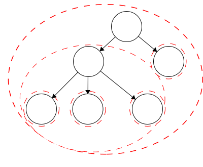
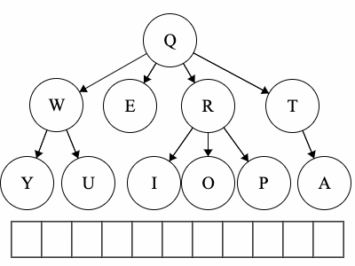
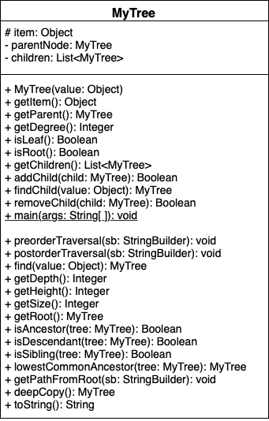

Welcome!
This page is the main page for Tree Traversal
This page is the main page for Tree Traversal
In the last module, we covered the underlying vocabulary of trees and how we can implement our own tree. To recall, we covered: node, edge, root, leaf, parent, child, and degree.
For this module we will expand on trees and gain a better understanding of how powerful trees can be. As before, we will use the same tree throughout the module for a guiding visual example.
Many of the terms used in trees relate to terms used in family trees. Having this in mind can help us to better understand some of the terminology involved with abstract trees. Here we have a sample family tree.
Ancestor - The ancestors of a node are those reached from child to parent relationships. We can think of this as our parents and our parent’s parents, and so on.
Descendant - The descendants of a node are those reached from parent to child relationships. We can think of this as our children and our children’s children and so on.
Siblings - Nodes which share the same parent

A recursive program is broken into two parts:
In principle, the recursive case breaks the problem down into smaller portions until we reach the base case. Recursion presents itself in many ways when dealing with trees.
Trees are defined recursively with the base case being a single node. Then we recursively build the tree up. With this basis for our trees, we can define many properties using recursion rather effectively.
We can describe the sizes of trees and position of nodes using different terminology, like level, depth, and height.
Level - The level of a node characterizes the distance between the node and the root. The root of the tree is considered level 1. As you move away from the tree, the level increases by one.
Depth - The depth of a node is its distance to the root. Thus, the root has depth zero. Level and depth are related in that: level = 1 + depth.
Height of a Node - The height of a node is the longest path to a leaf descendant. The height of a leaf is zero.
Height of a Tree - The height of a tree is equal to the height of the root.
When working with multidimensional data structures, we also need to consider how they would be stored in a linear manner. Remember, pieces of data in computers are linear sequences of binary digits. As a result, we need a standard way of storing trees as a linear structure.
Path - a path is a sequence of nodes and edges, which connect a node with its descendant. We can look at some paths in the tree above:
Q to O: QROTraversal is a general term we use to describe going through a tree. The following traversals are defined recursively.
Pre refers to the root, meaning the root goes before the children.QWYUERIOPTA
Post refers to the root, meaning the root goes after the children.YUWEIOPRATQ
When we talk about traversals for general trees we have used the phrase ’the traversal could result in’. We would like to expand on why ‘could’ is used here. Each of these general trees are the same but their traversals could be different. The key concept in this is that for a general tree, the children are an unordered set of nodes; they do not have a defined or fixed order. The relationships that are fixed are the parent/child relationships.
| Tree | Preorder | Postorder |
|---|---|---|
| Tree 1 | QWYUERIOPTA |
YUWEIOPRATQ |
| Tree 2 | QETARIOPWUY |
EATIOPRUYWQ |
| Tree 3 | QROPITAEWUY |
OPIRATEUYWQ |
Again, we want to be able to implement a working version of a tree. From the last module, we had functions to add children, remove children, get attributes, and instantiate MyTree. We will now build upon that implementation to create a true tree.
A recursive program is broken into two parts:
Recall that in the previous module, we were not yet able to enforce the no cycle rule. We will now enforce this and add other tree functionality.
Disclaimer: In the previous module we had a disclaimer that stated our implementation would not prevent cycles. The following functions and properties will implement recursion. Thus, we can maintain legal tree structures!
In the first module, we discussed how we can define trees recursively, meaning a tree consists of trees. We looked at the following example. Each red dashed line represented a distinct tree, thus we had five trees within the largest tree making six trees in total.
We will use our existing implementation from the first module. Now to make our tree recursive, we will include more getter functions as well as functions for traversals and defining node relationships.

We can define each of these recursively.
Depth - The depth of a node is its distance to the root. Thus, the root has depth zero.We can define the depth of a node recursively:
function GETDEPTH()
if ROOT
return 0
else
return 1 + PARENT.GETDEPTH()
end function
Height of a Node - The height of a node is the longest path to a leaf descendant. The height of a leaf is zero.We can define the height of a node recursively:
function GETHEIGHT()
if LEAF
return 0
else
MAX = 0
for CHILD in CHILDREN
CURR_HEIGHT = CHILD.GETHEIGHT()
if CURR_HEIGHT > MAX
MAX = CURR_HEIGHT
return 1 + MAX
end function
Root - the topmost node of the tree; a node with no parent.We can define returning the root recursively:
function GETROOT()
if ISROOT()
return this tree
else
return PARENT.GETROOT()
end function
We define the size of a tree as the total number of children.
function GETSIZE()
SIZE = 1
for CHILD in CHILDREN
SIZE += CHILD.GETSIZE()
return SIZE
end function
To find a value within our tree, we will traverse down a branch as far as we can until we find the value. This will return the tree that has the value as the root.
function FIND(VALUE)
if ITEM is VALUE
return this node
for CHILD in CHILDREN
FOUND = CHILD.FIND(VALUE)
if FOUND is not NONE
return FOUND
return NONE
end function
We can determine many relationships within the tree. For example, given a node is it an ancestor of another node, a descendant, or a sibling?
For this function, we are asking: is this node an ancestor of the current instance? In this implementation, we will start at our instance and work down through the tree trying to find the node in question. With that in mind, we can define this process recursively:
function ISANCESTOR(TREE)
if at TREE
return true
else if at LEAF
return false
else
for CHILD in CHILDREN
FOUND = CHILD.ISANCESTOR(TREE)
if FOUND
return true
return false
end function
For this function, we are asking: is this node a descendant of the current instance? In this implementation, we will start at our instance and work up through the tree trying to find the node in question. With that in mind, we can define this process recursively:
function ISDESCENDANT(TREE)
if at TREE
return true
else if at ROOT
return false
else
return PARENT.ISDESCENDANT(TREE)
end function
For this function, we are asking: is this node a sibling of the current instance? To determine this, we can get the parent of the current instance and then get the parents children. Finally, we check if the node in question is in that set of children.
function ISSIBLING(TREE)
if TREE in PARENT's CHILDREN
return true
else
return false
end function
In any tree, we can say that the root is a common ancestor to all of the nodes. We would like to get more information about the common ancestry of two nodes. For this function, we are asking: which node is the first place where this instance and the input node’s ancestries meet? Similar to our ISDESCENDANT, we will work our way up the tree to find the point where they meet
function LOWESTANCESTOR(TREE)
if at TREE
return TREE
else if ISANCESTOR(TREE)
return instance
else if at ROOT
return NONE
else
return PARENT.LOWESTANCESTOR(TREE)
end function
This function will generate the path which goes from the root to the current instance.
function PATHFROMROOT(PATH)
if NOT ROOT
PARENT.PATHFROMROOT(PATH)
append ITEM to PATH
end function
In this module we have talked about two traversals: preorder and postorder. Both of these are defined recursively and the prefix refers to the order of the root.
In a preorder traversal, first we access the root and then run the preorder traversal on the children.
function PREORDER(RESULT)
append ITEM to RESULT
FOR CHILD in CHILDREN
CHILD.PREORDER(RESULT)
end function
In a postorder traversal, first we run the postorder traversal on the children then we access the root.
function POSTORDER(RESULT)
FOR CHILD in CHILDREN
CHILD.POSTORDER(RESULT)
append ITEM to RESULT
end function
In this section, we discussed more terminology related to trees as well as tree traversals. To recap the new vocabulary:
Ancestor - The ancestors of a node are those reached from child to parent relationships. We can think of this as our parents and the parents of our parents, and so on.Depth - The depth of a node is its distance to the root. Thus, the root has depth zero. Level and depth are related in that: level = 1 + depth.Descendant - The descendants of a node are those reached from parent to child relationships. We can think of this as our children and our children’s children and so on.Height of a Node - The height of a node is the longest path to a leaf descendant. The height of a leaf is zero.Height of a Tree - The height of a tree is equal to the height of the root.Level - The level of a node characterizes the distance the node is from the root. The root of the tree is considered level 1. As you move away from the tree, the level increases by one.Path - a sequence of nodes and edges which connect a node with its descendant.Siblings - Nodes which share the same parentTraversal is a general term we use to describe going through a tree. The following traversals are defined recursively.